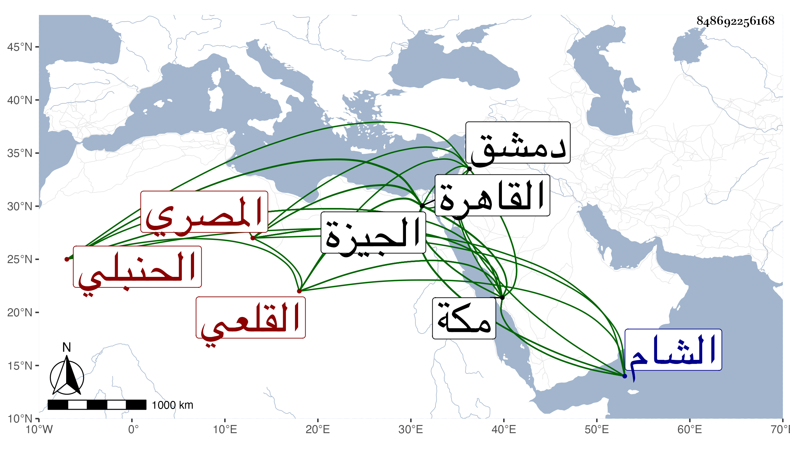

0902Sakhawi.DawLamic.ITO20230111-ara1.EIS1600.848692256168
Biography ID: 848692256168
أحمد بن عبد الله بن محمد الشهاب القلعي المصري الحنبلي نزيل مكة ويعرف بشيخ المنبر . قطن مكة وتردد منها مرارا إلى القاهرة ودمشق وتنزل في الشيخونية وخالط الناس وحضر بعض الدروس وكذا سمع على ابن ناظر الصاحبة وابن بردس وابن الطحان بحضرة البدر البغدادي الحنبلي بالجيزة ولازم الحضور عندي في المجاورة الثانية بمكة بل كان يزعم أن سبب تلقيبه بشيخ المنبر ملازمته لجلوسه أسفل منبر القارئ بين يدي شيخنا وينشد عنه أبياتا قالها فيه فالله أعلم . مات وقد قارب السبعين ظنا في يوم الأربعاء خامس رمضان سنة اثنتين وثمانين بالشخونية وكان قدم من الشام وهو متوعك ودفن من الغد عفا الله عنه .
